Oda, Shimane: things to do, food and stays
Oda · Shimane
Oda
Highlighted on the Shimane map.

Stay
四季の宿 さひめ野

Shiki No Yado Sahime No
Inn at Yakkoyutakana Onsen in Sanbe, Oda with a quiet countryside setting.
石見銀山の佇む宿 ゆずりは
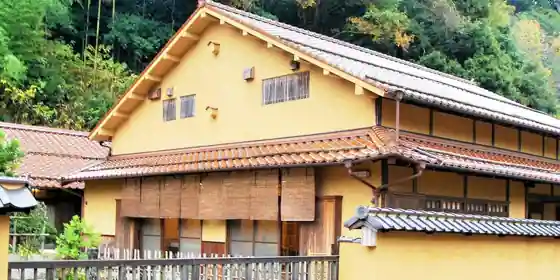
Iwami Ginzan No Tatazumu Yado Yuzuriha
旅館ますや
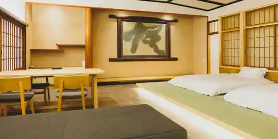
Ryokan Masuya
Ryokan inn at Otashi Onsen in Onsentsu, Oda.
Ｏｃｅａｎ Ｖｉｌｌａ Ｖｉｈａｒａ ヴィハーラ
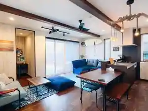
Ocean Villa Vihara Vihara
Ocean Villa Vihara S+ ヴィハーラ エスプラス
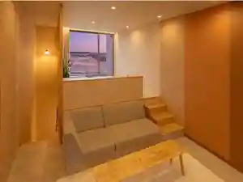
Ocean Villa Vihara S+ Vihara Esupurasu
1日2組限定小さなお宿泉弘坊温泉～石見銀山・出雲大社のお膝元
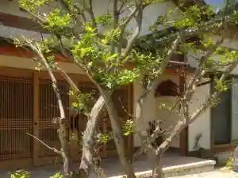
1 Nichi 2 Kumi Gentei Chisa Nao Yado Izumi Hiroshi Bo Onsen ~ Iwami Ginzan Izumotaisha No Hizamoto
Inn at Naoyadoizumihiroshibo Onsen in Kawai, Oda.
海の見える小さなお宿 金子旅館
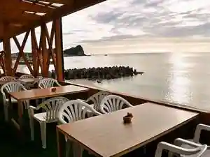
Umi No Mie Ru Chisa Nao Yado Kaneko Ryokan
Ryokan inn in Namine, Oda with local seafood dinners.
ゆずりは
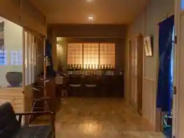
Yuzuriha
やど新田屋
Yado Nitta Ya
Inn in Asayama, Oda with a quiet countryside setting.
石見銀山 湯迫温泉旅館
Iwami Ginzan Yu Sako Onsen Ryokan
Ryokan inn at Yusako Onsen in Nima, Oda with pet-friendly rooms.
ドラマチックな自然体験に出逢える高原ホテル 三瓶温泉さひめ野
Doramachikku Na Shizentai Ken Ni Deae Ru Kogen Hotel Sanbe Onsen Sahime No
Hotel at Sanbe Onsen in Sanbe, Oda with a quiet countryside setting.
三瓶温泉 国民宿舎さんべ荘
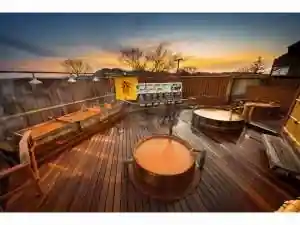
Sanbe Onsen Kokuminshukusha Sanbe So
Family-run minshuku at Sanbe Onsen in Sanbe, Oda with free-flowing hot spring baths and open-air baths.
Dining
旅館 のがわや

Ryokan Nogawaya
Cafe 住留
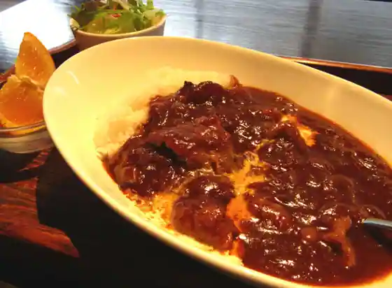
Cafe Ju Ryu
ベッカライ コンディトライ ヒダカ
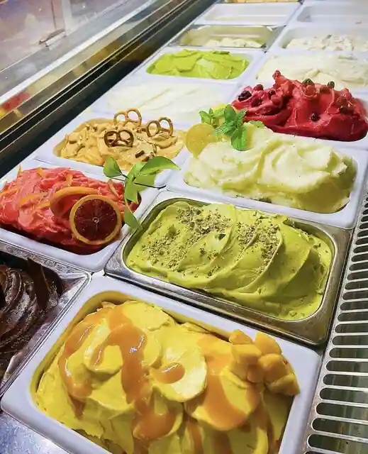
Bekkarai Konditorai Hidaka
群言堂 石見銀山本店
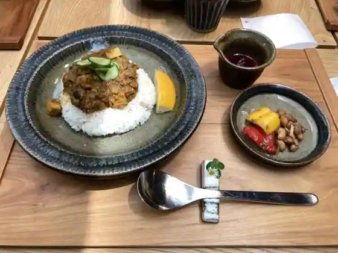
Gun Gen Do Iwami Ginzan Hon
震湯カフェ内蔵丞
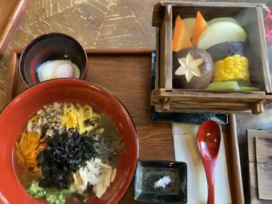
Shin Yu Cafe Naizo Jo
海の店 ささき
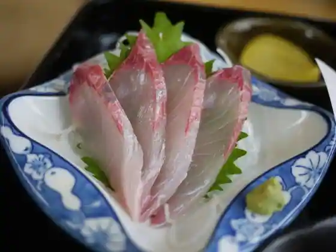
Umi No Sasaki
三瓶バーガー
Sanbe Burger
福寿庵
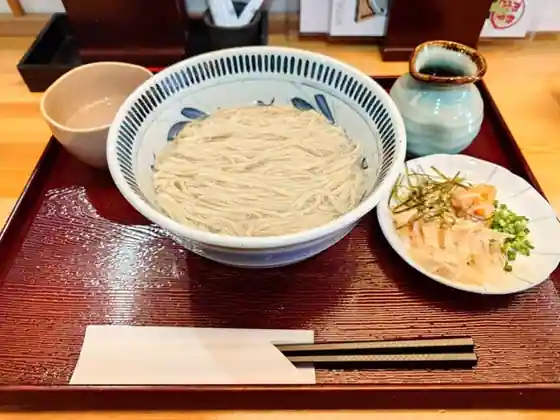
Fukuju Iori
おさかな処 料理 かめや
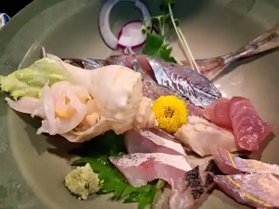
Osakana Tokoro Ryori Kameya
有馬光栄堂
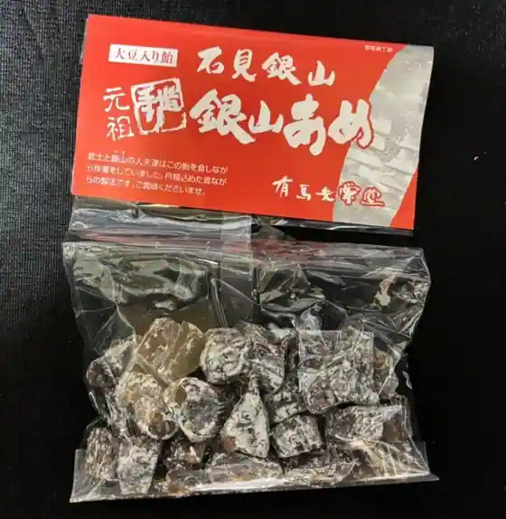
Arima Koei Do
そば工房 木の香
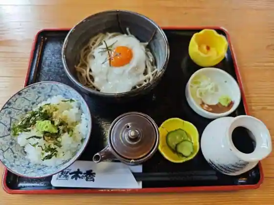
Soba Kobo Ki No Kaori
石見銀山 釜野屋
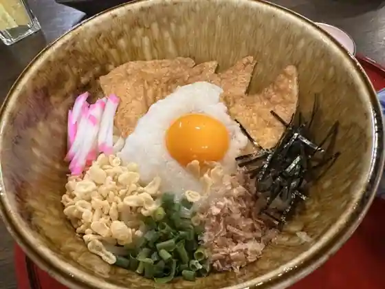
Iwami Ginzan Kama No Ya
和田珍味 本店
Wada Chinmi Hon
道の駅 ごいせ仁摩
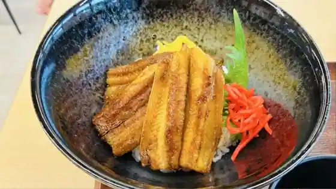
Michi No Eki Goise Nima
霧の海食堂 きっ川
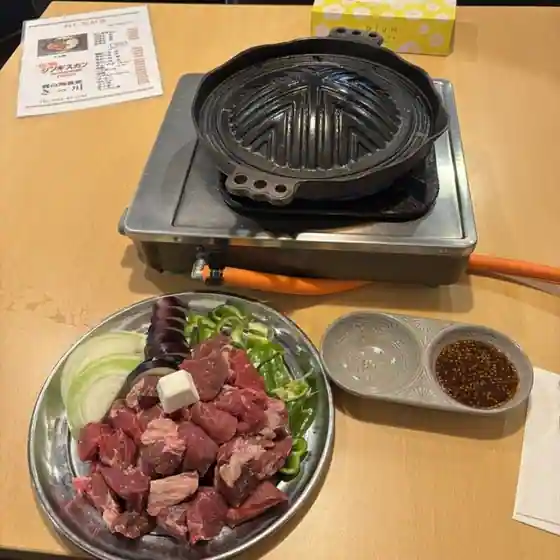
Kiri No Umi Shokudo Kitsu Kawa
道の駅 ロード銀山
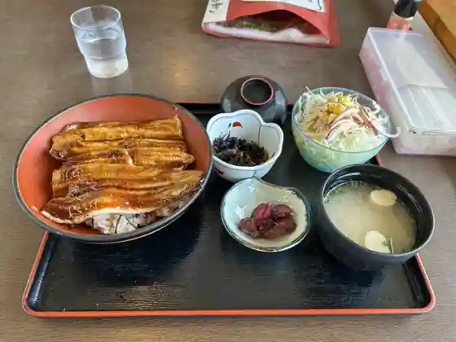
Michi No Eki Rodo Ginzan
三瓶温泉 そばカフェ 湯元
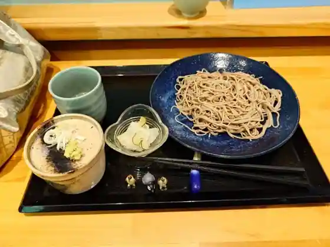
Sanbe Onsen Soba Cafe Yumoto
輝雲荘
Teru Kumo So
うどん処 おおだ
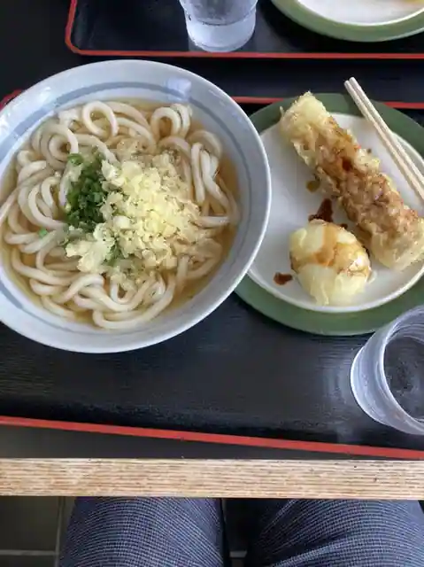
Udon Tokoro Oda
山羊コーヒー
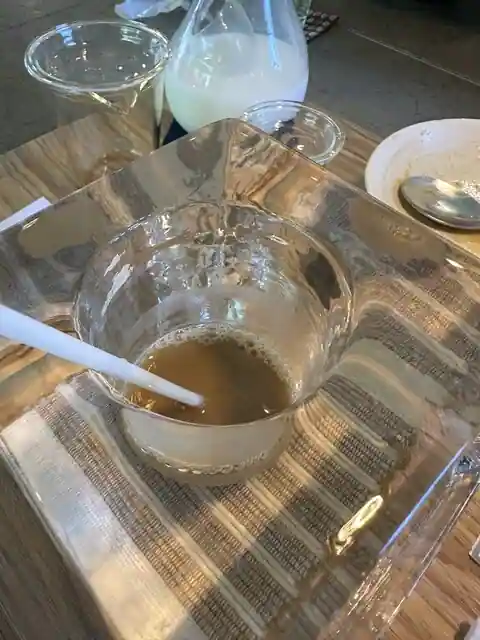
Yagi Coffee
WATOWA
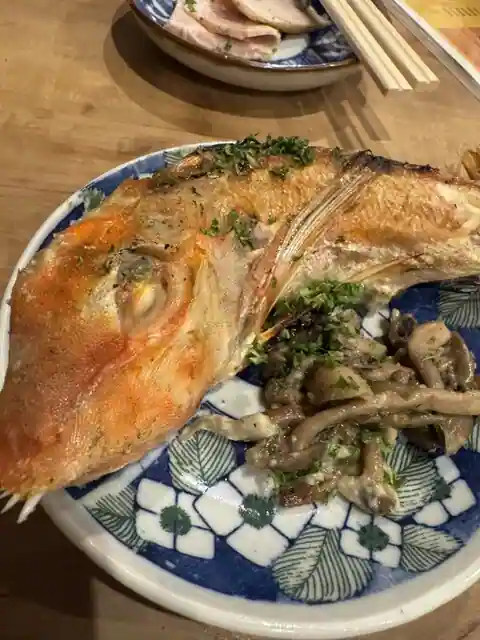
WATOWA
お食事処 おおもり
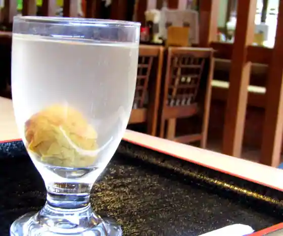
O Shokuji Tokoro Omori
路庵
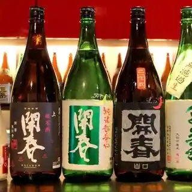
Michi Iori
Sights
Ryu Gen Tera Kanpo (Iwami Ginzan)

Kongahama
Iwami Ginzan Sekai Isan Center
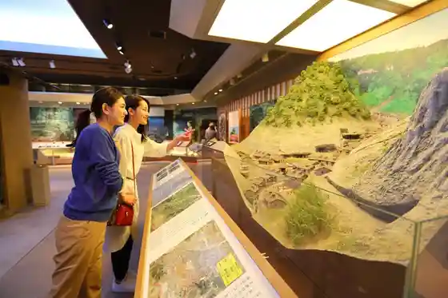
Iwami Ginzan Park
National Park Sambe Yama
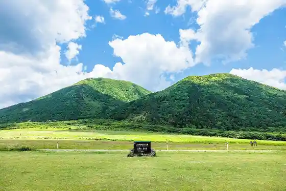
Nima Sando Museum (Suna Museum)
Onsen Tsu Onsen
Okubo Kanpo (Iwami Ginzan)
Mononobe Shrine
Sambe Azuki Hara Maibotsu Hayashi Park (Sambe Jomon no Mori Museum)
Kusurishi Yu
Rakan Tera Gohyaku Rakan
Onsen Tsu Onsen Ryu Omae Shrine Iwami Kagura Teiki Koen
Kokuminshukusha Sambe So
Shimane Prefectural Sambe Shizen Kan Sahimeru
Iwami Ginzan Gun Gen Do Main Shop
Bekkarai Konditorai Hidaka Bäckerei Konditorei Hidaka
Jo Zen Tera
Shiro Ue Shrine
Sambe Kanko Rifuto
Onsen Tsu Streetscape Sansaku
Rentasaikuru Kawa Village
Omori Ginzan Juyo Dentoteki Kenzobutsu Gun Hozon Chiku
Iwami Ginzan Iseki
Kaneko Ryokan
Imo Daikan Museum (Iwami Ginzan Museum)
Itakeru no Guro
Iwami Ginzan Kanko Wankoingaido (Ryu Gen Tera Kanpo Kosu)
Arima Koei Do
Roadside Station (Goise Nima)
Juyo Bunkazai Kumagaya Ie House
Iwami Ginzan no Mannaka Ni Tatazumu Yado (Yuzuriha)
Onsen Tsu Yakimo no Village
Sambe Onsen Kame Baths
Cafe Ju Ryu
Sambe Yama Kita no Hara Campground
Kutsurogi no Yado Teru Kumo So
Karakami Shiragi Shrine
Fukumitsu Ishi Ishikiri Ri Ba Kengaku
Kushi Shima Campground
O Shokuji Tokoro Omori
Naka no Ya Ryokan
Sambe Onsen Shigaku Kusurishi Tsuru Baths
Hime to Ike to Hime to Ike no Kakitsubata Gunraku
Kyu Te Beach
Iwami Ginzan Kanko Wankoingaido (Omori no Streetscape Kosu)
Fugen Castle Ruins
Roadside Station Rodo Ginzan
Sambe Onsen
Ryu Omae Shrine
Wada Chinmi Main Shop
Shiki no Yado Sahime no
Streetscape Koryu Center
Fu Nuno Ike
Shimane Prefectural Danjotomo Dosan Ga Center
Hakozushi
Kan Shima
Sei Yuki Kutsu
Daikanyama Zoo
Tenryo San
Ruruburu Iwami Ginzan (L’heure Bleue Iwamiginzan)
Ginzan Park no Ume
Yamabuki Castle Ruins
Nima Kenko Park
Oe Kozan
Tategami Iwa
Yu Sako Onsenryokan
Sambe Onsen Soba Kafe Yumoto
National Sambe Seishonen Koryu no Ie
Sambe Yama Autumn Leaves
Sambe Highlands
Obama Onsen Sai City Baths
Kyu Kawashima Ie House (Buke Residence)
Nakada Shoten
Resutoran Kokotto
Yu Sako Onsen
Sa Hime Yama Shrine
Nimagoise Matsuri
ZUIENT
Osakana Tokoro Ryori Kameya
Kongahama no (Chiinaka Mame)
Onsen Tsu Fureai Kan
SANBE BURGER Sambe Main Shop
Umigami Raku
Sambe Kogen Buruberii Farm
Toge Shika Shrine Cherry Blossoms
Shin Yu Kafe Naizo Jo
Iwami Ginzan Cherry Blossoms
Yugengaisha Oka Fusho Mise
Taku no Kodomo Kagura
Kobayashi Workshop
Yama no Eki Sambe
Onsen Tsu Coast
NEW Sukai Hotel
Okubo Iwami Shu no Haka
Sambe Kawa (Sei Kan Kawamizu Kei)
Tsuruoka Minami Hachiman Shrine
Anraku Tera
Sambe Yamayama Hiraki
Kushi Yama Castle Ruins
Hon'imbo Michi Saku Kensho Hi
Iwami Wainarii
Kaisen Kappo Asahi
Laundry• Kitchen•Dormitory WATOWA
Riyo Kan Arata Wada Chinmi Iwami Ginzan Mise
Sambe Soba
Yubi Kaki no Myogo Ishi
Sambe Yama no Soba no Hana
Ichinomiya Shuzo
Takano Tera
Kissa Yamabuki
Pan Kobo Doruche Biita
Enri Kama
Ya Taki Castle Ruins
Kongahama Bon'odori
Sambe Yama Herushiitoreiringukosu
Onsen Tsu
Sambe no Yamazakura
Riraku & Kafe Luck Luck
Onsen Tsu Onsen Natsu Festival
Sadame no Matsu
Tane Kagura
Hoshifuru Mori no Shashinkan
Soba Workshop Ki no Kaori
Oda Rejaai Land Kaizoku Village
Tenku no Asagohan
Kondogahama Hamanasu Jisei Chi
HÏSOM Nichi So
Wakabayashi Shuzo
Onsen Tsu Yakimo no Festival
Iwami Ginzan Ume Festival
cafe&bar Michi Iori
Sambe Kogen Kurosukantorii
Sambe Yamanishi no Hara Hiire Re
Cucina cantare
CAFEBAR MAHORA (Naka no Ya Ryokan)
Sukai Hotel Oda
U Shima
Takyo Abe Ie
Iwami Ginzan Gaido no Kai
Yu Ruri
Rozushiroppu
Sambe Komorebi no Plaza Mokko Kan
Tokitsukaze
Minato no Shokudo KAN
Jomon no Mori Park
to Tomoru
Shunko Sono
doma cafe gallery
Amazake Sumujii
Onsen Tsu Shinshun Kagura
SHIKI
Sambe Shigaku no Yuki Akari
Shukubo Shimizu Taishi
Oda Yakusho